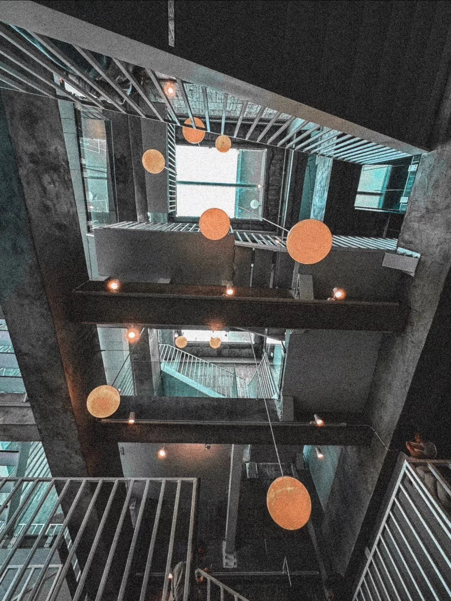
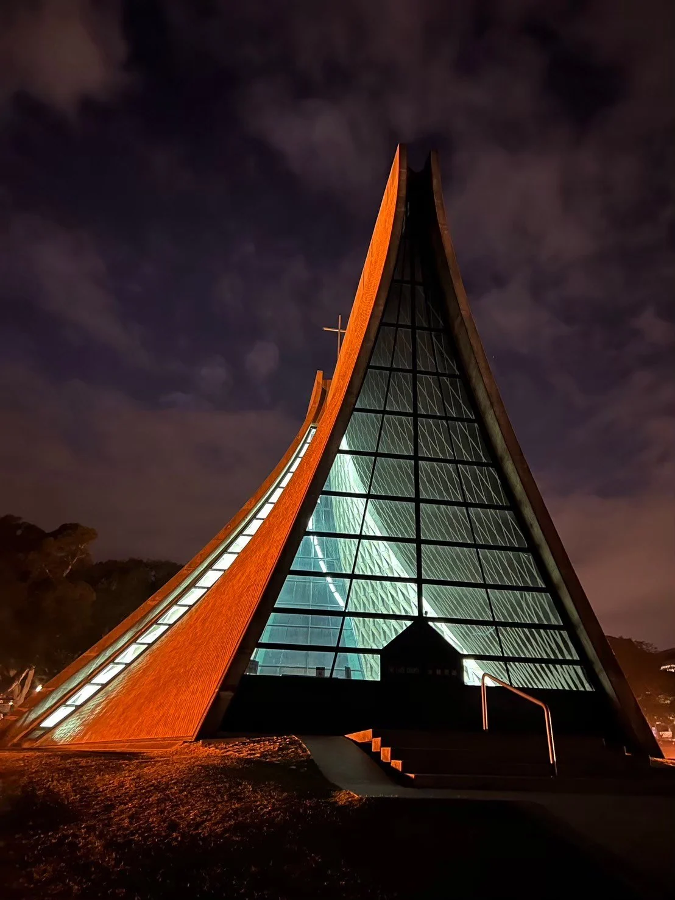
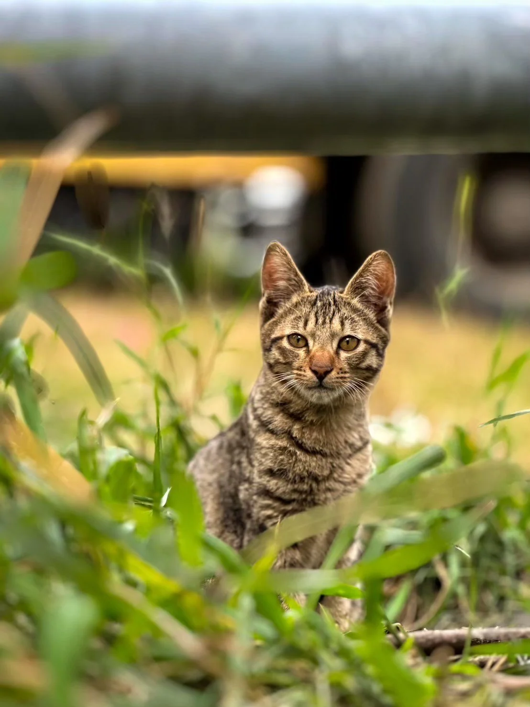
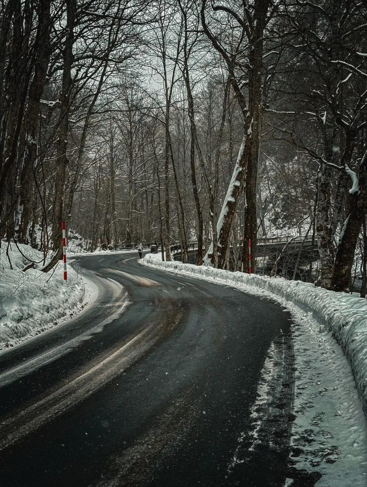
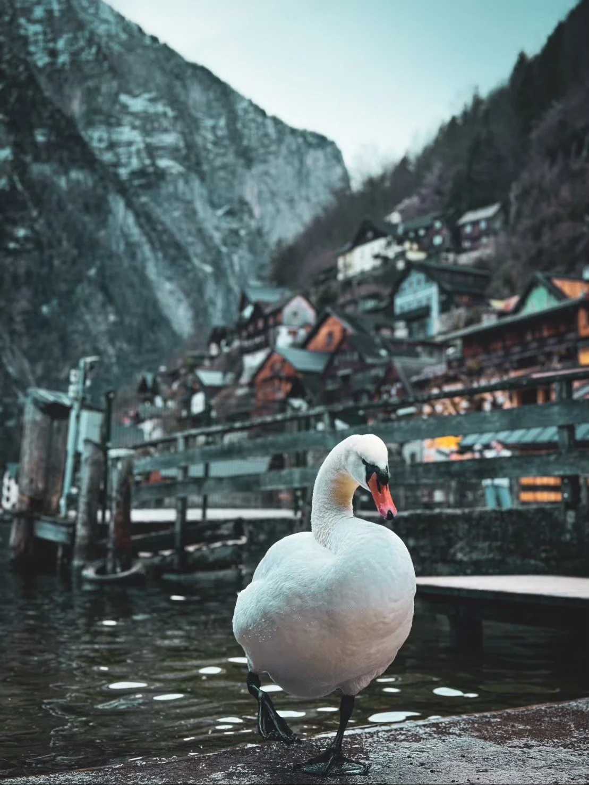
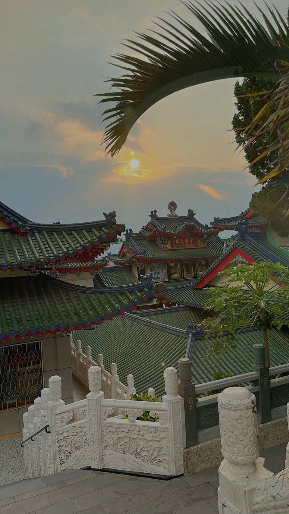
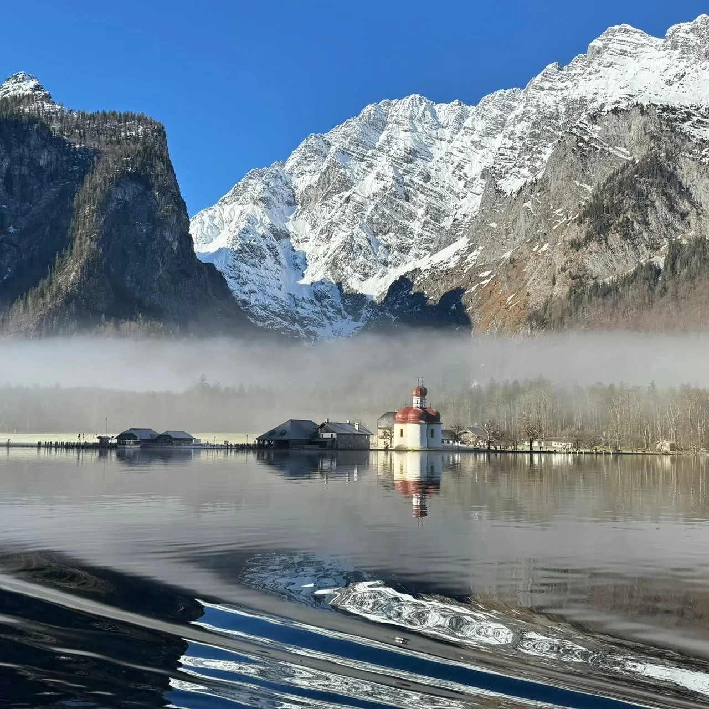
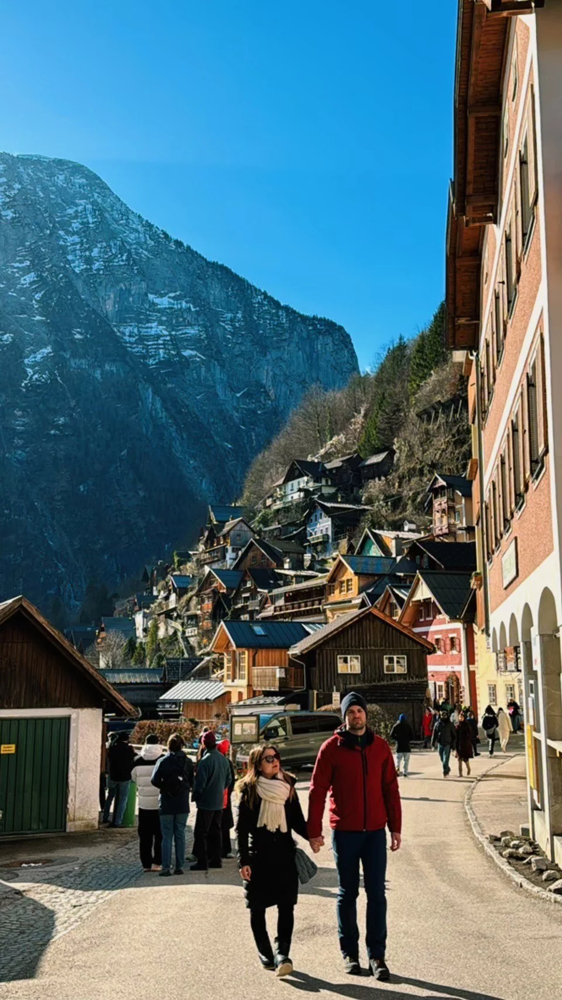

PHOTOGRAPHY
Back to Home
Spatial & Atmospheric Photography
"Every day, whether ordinary or extraordinary, I document spaces through photography—like a visual diary remembering the past."








